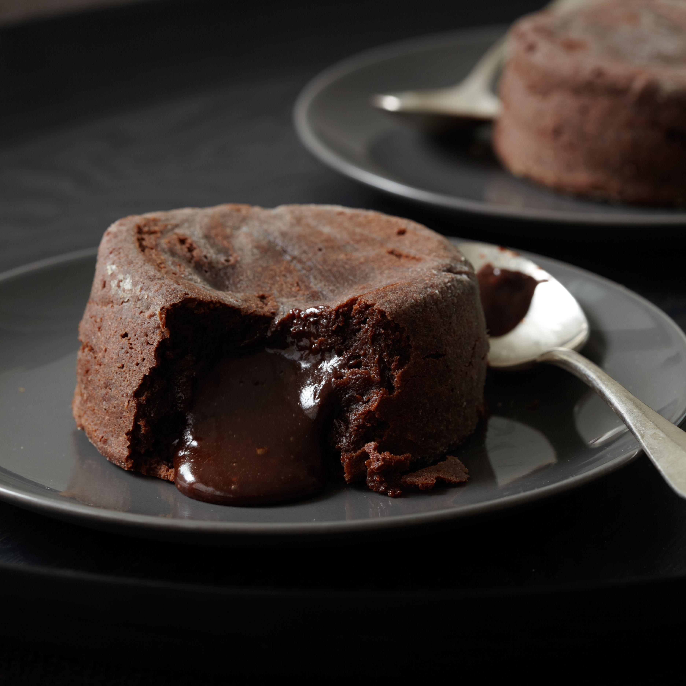
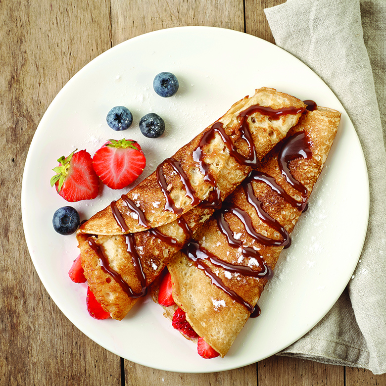
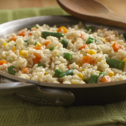

-
Lava cake
Ingredients:
- 1 stick (4 ounces) unsalted butter
- 6 ounces bittersweet chocolate, preferably Valrhona
- 2 eggs
- 2 egg yolks
- 1/4 cup sugar
- Pinch of salt
- 2 tablespoons all-purpose flour
Steps:
Preheat the oven to 450°. Butter and lightly flour four 6-ounce ramekins. Tap out the excess flour. Set the ramekins on a baking sheet.
In a double boiler, over simmering water, melt the butter with the chocolat e. In a medium bowl, beat the eggs with the egg yolks, sugar and salt at high speed until thickened and pale.
Whisk the chocolate until smooth. Quickly fold it into the egg mixture along with the flour. Spoon the batter into the prepared ramekins and bake for 12 minutes, or until the sides of the cakes are firm but the centers are soft. Let the cakes cool in the ramekins for 1 minute, then cover each with an inverted dessert plate. Carefully turn each one over, let stand for 10 seconds and then unmold. Serve immediately.
Lasagna

Ingredients:
- 1 pound sweet Italian sausage
- 3/4 pound lean ground beef
- 1/2 cup minced onion
- 2 cloves garlic, crushed
- 1 (28 ounce) can crushed tomatoes
- 2 (6 ounce) cans tomato paste
- 2 (6.5 ounce) cans canned tomato sauce
- 1/2 cup water
- 2 tablespoons white sugar
- 1 1/2 teaspoons dried basil leaves
- 1/2 teaspoon fennel seeds
- 1 teaspoon Italian seasoning
- 1 1/2 teaspoons salt, divided, or to taste
- 1/4 teaspoon ground black pepper
- 4 tablespoons chopped fresh parsley
- 12 lasagna noodles
- 16 ounces ricotta cheese
- 1 egg
- 3/4 pound mozzarella cheese, sliced
- 3/4 cup grated Parmesan cheese
Steps:
In a Dutch oven, cook sausage, ground beef, onion, and garlic over medium heat until well browned. Stir in crushed tomatoes, tomato paste, tomato sauce, and water. Season with sugar, basil, fennel seeds, Italian seasoning, 1 teaspoon salt, pepper, and 2 tablespoons parsley. Simmer, covered, for about 1 1/2 hours, stirring occasionally.
Bring a large pot of lightly salted water to a boil. Cook lasagna noodles in boiling water for 8 to 10 minutes. Drain noodles, and rinse with cold water. In a mixing bowl, combine ricotta cheese with egg, remaining parsley, and 1/2 teaspoon salt.
Preheat oven to 375 degrees F (190 degrees C).
To assemble, spread 1 1/2 cups of meat sauce in the bottom of a 9x13-inch baking dish. Arrange 6 noodles lengthwise over meat sauce. Spread with one half of the ricotta cheese mixture. Top with a third of mozzarella cheese slices. Spoon 1 1/2 cups meat sauce over mozzarella, and sprinkle with 1/4 cup Parmesan cheese. Repeat layers, and top with remaining mozzarella and Parmesan cheese. Cover with foil: to prevent sticking, either spray foil with cooking spray, or make sure the foil does not touch the cheese.
Bake in preheated oven for 25 minutes. Remove foil, and bake an additional 25 minutes. Cool for 15 minutes before serving.
Crepes
Ingredients:
- 1 cup all-purpose flour
- 2 eggs
- 1/2 cup milk
- 1/2 cup water
- 1/4 teaspoon salt
- 2 tablespoons butter, melted
Steps:
In a large mixing bowl, whisk together the flour and the eggs. Gradually add in the milk and water, stirring to combine. Add the salt and butter; beat until smooth.
Heat a lightly oiled griddle or frying pan over medium high heat. Pour or scoop the batter onto the griddle, using approximately 1/4 cup for each crepe. Tilt the pan with a circular motion so that the batter coats the surface evenly.
Cook the crepe for about 2 minutes, until the bottom is light brown. Loosen with a spatula, turn and cook the other side. Serve hot.
Vegetable rice
Ingredients:
- 1 tablespoon vegetable oil
- 3/4 cup long-grain white rice, uncooked
- 1/2 teaspoon minced garlic
- 1 1/2 cups reduced-sodium chicken broth
- 1 cup vegetable mix of choice
- 1/4 teaspoon dried thyme leaves
- 1/8 teaspoon salt
Steps:
Put vegetable oil in medium skillet over medium-high heat. Add rice and garlic; cook 3 minutes or until garlic is fragrant, stirring frequently.
Add broth, vegetables, thyme and salt to skillet; bring to boil. Cover skillet, reduce heat to low and cook 18 minutes or until rice is tender.
 (っ◔◡◔)っ ♥ Katerina Bogojoska ♥
(っ◔◡◔)っ ♥ Katerina Bogojoska ♥